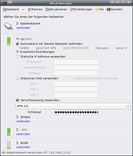
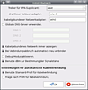

Wicd
Dieser Artikel wurde für die folgenden Ubuntu-Versionen getestet:
Dieser Artikel ist größtenteils für alle Ubuntu-Versionen gültig.
Zum Verständnis dieses Artikels sind folgende Seiten hilfreich:
Der Netzwerkmanager Wicd stellt eine auf der Grafikbibliothek GTK+ basierende grafische Oberfläche zur Verfügung, um Verbindungen zu WLAN- und kabelgebundenen Netzwerken herzustellen und zu verwalten. Damit ist das Programm eine Alternative zum normalerweise unter Ubuntu verwendeten NetworkManager. Möglichst alle Einstellungen der jeweiligen Verbindungsart sollen dem Benutzer in einem einfach zu bedienenden Programm geboten werden. Die in Python geschriebene Anwendung benutzt dazu verschiedene Linux-Werkzeuge für Netzwerkverbindungen, zum Beispiel wpa supplicant.
Wicd verfügt über die folgenden Leistungsmerkmale:
Übersichtliche Profilverwaltung
Unterstützung statischer IP-Adressen und DHCP
Profilbezogene Einstellungen für DNS-Server, Subnetzmasken und Gateways
Erkennt WLAN-Karten unter ndiswrapper
Unterstützung für wpasupplicant
Unterstützung kabelgebundener Netzwerke
Autostartfunktion
Erneuter Verbindungsaufbau nach Suspend-Modus
Unterstützt WEP, WPA(2), LEAP, TTLS, EAP, PEAP Verschlüsselung - mehr Informationen
Verschlüsselung über sog. Templates (Vorlagen) die selbst erstellt oder auch angepasst werden können
Skriptfunktion
Installation¶
Es genügt die Installation des Pakets aus den offiziellen Paketquellen [1]:
wicd (universe)
 mit apturl
mit apturl
Paketliste zum Kopieren:
sudo apt-get install wicd
sudo aptitude install wicd
Der vorinstallierte Network-Manager wird nicht automatisch entfernt. Es genügt manchmal, den Network-Manager aus dem Autostart [2] zu entfernen. Meistens ist es jedoch notwendig, ihn nach der Installation von Wicd vollständig zu deinstallieren [3]:
sudo apt-get remove --purge network-manager network-manager-gnome
(für den KNetworkmanager die entsprechenden Pakete)
Zum Testen kann der Network-Manager auch temporär deaktiviert werden, um Wicd den Verbindungsaufbau zu ermöglichen:
sudo service network-manager stop sudo killall wpa_supplicant
Konfiguration¶

Nach dem Programmstart muss zuerst unter "Einstellungen" im Feld "drahtloser Netzwerkadapter" die verwendete WLAN-Schnittstelle eingetragen werden (z.B. wlan0). Nach einen Klick auf "Aktualisieren" sollten jetzt alle erkannten WLAN-Netze aufgelistet werden. Dieser Vorgang kann einen Moment dauern. Die erkannte Verschlüsselung der gefundenen WLAN-Netze wird ebenfalls angezeigt.
Damit eine LAN-Schnittstelle konfiguriert werden kann, muss unter "Einstellungen" das Kontrollfeld "Kabelgebundenes Netzwerk immer anzeigen" aktiviert und im Feld "Wired Interface" die Schnittstelle eingetragen werden (im Beispiel eth0). Über das Auswahlmenü neben dem Netzwerknamen erlangt man Zugriff auf den Bereich "erweiterte Einstellungen" und das Kontrollfeld "Automatisch mit diesem Netzwerk verbinden". Für jedes Netzwerk können jetzt alle benötigten Einstellungen zur Verschlüsselung, wenn gewünscht für eine statische IP-Adresse und falls erforderlich für drei DNS-Server eingetragen werden.
Dazu wird das entsprechende Kontrollfeld "Statische IP-Adresse verwenden" bzw. "Statischen DNS verwenden" aktiviert. Jetzt kann man die Daten in die Tabellen eintragen. Werden keine weiteren Angaben für eine statische IP-Adresse gemacht, erfolgt die Vergabe der Adresse automatisch über DHCP. Um die Verschlüsselung einzuschalten, wird das Kontrollfeld "Verschlüsselung verwenden" aktiviert, dann über das Auswahlfeld die Art der Verschlüsselung eingestellt und der Zugangsschlüssel eingetragen. WPA-Zugangsschlüssel werden grundsätzlich in Klartext eingegeben. Wicd wandelt die Schlüssel in Hex-Code um und speichert diese in einer Profildatei ab. Bei WEP-Verschlüsselung muss der Zugangsschlüssel entweder in Hex-Code oder als Klartext (ASCII-Code/WEP-Passphrase) eingegeben werden. Sind alle Einstellungen gemacht, wird über die Schaltfläche "verbinden" versucht eine Verbindung aufzubauen.
Neben jedem gefundenen Netzwerk ist die Empfangsqualität abzulesen (von eingeschränkt bis sehr gut):

Über das Menü gibt es noch die Möglichkeit nach einem Netzwerk mit unsichtbarer ESSID zu suchen, die Netzwerkliste zu aktualisieren, eine aktuelle Verbindung zu trennen und Grundeinstellungen des Programms festzulegen. Je nach verwendeter Netzwerkkarte kann auch der Treiber für wpa_supplicant ausgewählt werden. Standard ist wext.
Weitere Informationen zur Verschlüsselung und den Gerätetreibern findet man hier WLAN/wpa supplicant.
Mehr Informationen dazu gibt es in den FAQ  auf der Projektseite.
auf der Projektseite.
Skriptfunktion¶
Über die Skriptfunktion in Wicd können z.B. selbst erstelle Bash-Skripte ausgeführt werden. Diese Funktion kann für LAN-und WLAN-Verbindungen verwendet werden. Das kann auch dazu genutzt werden um nach Aufbau der LAN- oder WLAN-Verbindung eine zusätzlich erforderliche DSL-Einwahlverbindung über VPNC auszulösen und auch wieder zu trennen. Ein praktisches Beispiel für ICS.
Die Skriptnamen werden in die entsprechenden Eingabefelder eingetragen und die Aktion wird dann zu einem entsprechenden Zeitpunkt ausgeführt
Pre-connection Script - das Skript wird vor Verbindungsaufbau ausgeführt
Post-connection Script - das Skript wird nach Verbindungsaufbau ausgeführt
Pre-disconnection Script - das Skript wird vor Verbindungsabbau ausgeführt
Post-disconnection Script - das Skript wird nach Verbindungsabbau ausgeführt
Die erstellen Skripte müssen noch in die entsprechenden Unterverzeichnisse kopiert werden damit Wicd diese findet und ausführen kann
/etc/wicd/scripts/preconnect - für das Pre-connection Skript
/etc/wicd/scripts/postconnect - für das Post-connection Skript
/etc/wicd/scripts/predisconnect - für das Pre-disconnection Skript
/etc/wicd/scripts/postdisconnect - für das Post-disconnection Skript
Die Einträge für die Skripte können auch mit einem Editor [4] und Root-Rechten [5] manuell in das passende Profil der Konfigurationsdatei /etc/wicd/wireless-settings.conf eingefügt werden.
beforescript - vor Verbindungsaufbau
afterscript - nach Verbindungsaufbau
predisconnectscript - vor Verbindungsabbau
postdisconnectscript - nach Verbindungsabbau
Für das oben verlinkte Beispiel zu ICS also
afterscript = ics_up.sh postdisconnectscript = ics_down.sh
Verschlüsselungs-Vorlagen¶
Vorlagen selbst erstellen¶
Hinweis:
Ab Version 1.5 liegen die Vorlagen im Ordner /etc/wicd/encryption/templates/ und nicht mehr unter /opt/wicd/encryption/templates/.
Da die von Wicd angebotenen Verschlüsselungsmethoden als Vorlagen (Templates) definiert sind, lässt sich Wicd auch leicht um weitere ergänzen. Dazu erstellt man eine Datei im Verzeichnis /etc/wicd/encryption/templates/ und editiert sie entsprechend [4]. Nun macht man diese noch ausführbar :
sudo chmod 755 /etc/wicd/encryption/templates/mytemplate
Eine Wicd-Vorlage besteht aus zwei Teilen, die durch fünf - getrennt sind. Oberhalb dieser Trennung steht der Name für die Auswahl in Wicd, der Autor, die Version und weitere Variablen-Deklarationen. Für jede deklarierte Variable wird in Wicd ein Textfeld erzeugt, in dem man den Inhalt der Variablen setzen kann. Der zweite Teil der Datei besteht aus wpa_supplicant.conf-Anweisungen, in denen bestimmte Stellen durch die deklarierten Variablen ersetzt werden. Die Variable $_ESSID enthält beispielsweise die SSID des in Wicd ausgewählten Access-Points.
Um eine Vorlage in Wicd verfügbar zu machen, muss in /etc/wicd/encryption/templates/active der Name der neuen Datei eingetragen werden.
sudo echo 'mytemplate' >> /etc/wicd/encryption/templates/active
Ein Beispiel für eine Vorlage mit EAP und Mshap V2 wäre z.B.:
name = EAP-MSCHAP v2
author = ein Name
version = 2
require identity *Identity password *Password
-----
ctrl_interface=/var/run/wpa_supplicant ## (ab Version 1.5.* einfügen)
network={
ssid="$_ESSID"
scan_ssid=$_SCAN
key_mgmt=WPA-EAP
pairwise=TKIP
group=TKIP
eap=PEAP
identity="$_IDENTITY"
password="$_PASSWORD"
phase2="auth=MSCHAPV2"
}Add-On¶
Durch eine von elektronenblitz63 zur Verfügung gestellte Erweiterung  ist es u.a. möglich, anstelle einer kombinierten Verschlüsselung aus WPA1/2 gezielt WPA1- oder WPA2-Verschlüsselung zu erzwingen. Manche Router bieten nur gemischte Verschlüsselung an und das kann mit WLAN-Karten, die nur WPA1 unterstützen, zu Verbindungsproblemen führen. Andersherum ist es beispielsweise möglich, nur WPA2 auszuwählen, wenn die verwendete Karte dies unterstützt oder bei der kombinierten Verschlüsselung nur WPA1 verwendet wird.
ist es u.a. möglich, anstelle einer kombinierten Verschlüsselung aus WPA1/2 gezielt WPA1- oder WPA2-Verschlüsselung zu erzwingen. Manche Router bieten nur gemischte Verschlüsselung an und das kann mit WLAN-Karten, die nur WPA1 unterstützen, zu Verbindungsproblemen führen. Andersherum ist es beispielsweise möglich, nur WPA2 auszuwählen, wenn die verwendete Karte dies unterstützt oder bei der kombinierten Verschlüsselung nur WPA1 verwendet wird.
Der Network-Manager hat an dieser Stelle sehr oft Probleme, sich mit solch einem Access-Point zu verbinden, da eine gezielte Auswahl der Verschlüsselungsmethode (WPA1-TKIP oder WPA2-AES) bzw. eine individuelle Kombination nicht möglich ist.
Zusätzlich kann eine Verbindung mit Angabe der BSSID (MAC-Adresse) des Access-Points gewählt werden. Das ist besonders in kritischen WLAN-Umgebungen oder bei WDS nützlich, um gezielt eine Verbindung mit einem bestimmten Access-Point herzustellen, um einen ungewollten Wechsel zwischen verschiedenen Access-Points in Reichweite, und damit Verbindungsabbrüche (sog. Roaming), zu verhindern.
Selbst erstellte Vorlagen werden bei Bedarf auch gerne mit in das Erweiterungs-Paket übernommen. Eine Mail an den Autor mit den nötigen Daten und einer kurzen Beschreibung genügt.
Hinweis:
Nach der Installation stehen zuvor selbst erstellte Vorlagen durch den Austausch der Datei active nicht mehr zur Verfügung. Die Dateien selbst werden aber nicht gelöscht, in der Datei active müssen lediglich die Einträge für die manuell erstellten Vorlagen wieder hinzugefügt werden.
Problembehebung¶
Wicd-Symbol nicht im Panel¶
Unter Unity erscheint das Wicd-Symbol nicht im oberen Panel und das grafische Frontend muss manuell gestartet werden, um die Netzwerk-Konfiguration vornehmen zu können.
wicd-client
Dieses Problem tritt auch in Ubuntu 14.04 und 14.10 noch auf.
Wie man dieses Problem behebt, wird im Artikel Unity/Unity Desktop erklärt. In aktuellen Ubuntu-Versionen läßt sich das Problem nur durch einen Patch beheben. Näheres dazu ist ab Beitrag 11 in https://bugs.launchpad.net/wicd/+bug/761326 zu finden.
Die wesentlichen Schritte sind die Ausführung folgender Befehle im Terminal:
cd ~/Downloads # Patch für korrekte Anzeige des wicd-Indicators in Unity runterladen (Anhang im Beitrag Nr. 11 oben) wget https://bugs.launchpad.net/wicd/+bug/761326/+attachment/3767555/+files/wicd-client-appindicator.patch # Patch anwenden (mit Backup der veränderten Datei) sudo patch -b /usr/share/wicd/gtk/wicd-client.py wicd-client-appindicator.patch # Testen, ob der Indicator angezeigt wird beim Start des Clients: wicd-client # Jetzt müsste der Indikator im Panel oben sichtbar sein. Der Client kann nun beendet und das Terminal geschlossen werden
Jetzt startet man den Rechner neu und prüft, ob der Indikator sichtbar ist.
Grafisches Frontend startet nicht¶
Unter Ubuntu 13.10, 14.04 und 14.10 startet das grafische Frontend nicht und bricht mit folgender Fehlermeldung ab:
"Konnte nicht mit der D-Bus-Schnittstelle für wicd verbinden. Überprüfen Sie das Log von wicd auf Fehlermeldungen."
Die vollständige Fehlerausgabe der Kommandozeile, beim Aufruf von wicd-client:
Has notifications support True
Loading...
Connecting to daemon...
Can't connect to the daemon, trying to start it automatically...
Fontconfig warning: "/etc/fonts/conf.d/50-user.conf", line 15: reading configurations from ~/.fonts.conf is deprecated.
Traceback (most recent call last):
File "/usr/share/wicd/daemon/wicd-daemon.py", line 1859, in <module>
main(sys.argv)
File "/usr/share/wicd/daemon/wicd-daemon.py", line 1708, in main
os.symlink(dest, backup_location)
OSError: [Errno 17] File exists
Fontconfig warning: "/etc/fonts/conf.d/50-user.conf", line 15: reading configurations from ~/.fonts.conf is deprecated.
Can't connect to the daemon, trying to start it automatically...
Fontconfig warning: "/etc/fonts/conf.d/50-user.conf", line 15: reading configurations from ~/.fonts.conf is deprecated.
Traceback (most recent call last):
File "/usr/share/wicd/daemon/wicd-daemon.py", line 1859, in <module>
main(sys.argv)
File "/usr/share/wicd/daemon/wicd-daemon.py", line 1708, in main
os.symlink(dest, backup_location)
OSError: [Errno 17] File existsHier wird der Fehler "OSError" in der Datei /usr/share/wicd/daemon/wicd-daemon.py angezeigt. Um diesen Fehler zu beheben, öffnet man die Datei in einem Editor mit Root-Rechten und ändert die Zeilen 1708 bis 1711 von
os.symlink(dest, backup_location)
else:
shutil.copy2('/etc/resolv.conf', backup_location)
os.chmod(backup_location, 0644)in
try:
os.symlink(dest, backup_location)
except OSError:
pass
else:
shutil.copy2('/etc/resolv.conf', backup_location)
try:
os.chmod(backup_location, 0644)
except OSError:
passab.
Verwendete Symbole anpassen¶
Um die vom Programm verwendeten Symboldateien anzupassen, müssen diese mit Root-Rechten in den Ordner /usr/share/pixmaps/wicd/ kopiert werden. Dazu kann man die Alternate Wicd Tray Icons oder die Datei wicd-images.1.01.tar.gz  (Optik wie beim Network-Manager) nutzen, die zuerst heruntergeladen und entpackt [6] werden muss.
(Optik wie beim Network-Manager) nutzen, die zuerst heruntergeladen und entpackt [6] werden muss.
Links¶
AddOn für Wicd-Netzwerkmanager
- Erweiterung/fertige Vorlagen, um die verwendete Verschlüsselungsmethode gezielt auswählen zu können
- Erstellt mit Inyoka
-
 2004 – 2017 ubuntuusers.de • Einige Rechte vorbehalten
2004 – 2017 ubuntuusers.de • Einige Rechte vorbehalten
Lizenz • Kontakt • Datenschutz • Impressum • Serverstatus -
Serverhousing gespendet von